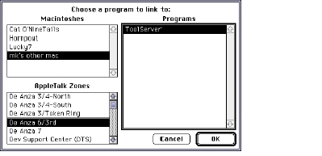

SYNTAX
RShell [[command | <script] [-b | -f | -r target] [-q ]] | DESCRIPTION The RShell command generates Apple events which are understood by ToolServer and the MPW Shell. The Apple events represent either a command line or a script. You can use it to delegate time-consuming tasks, such as compiling or building an application, to run in the background or on another machine while you continue working. The RShell command allows you to • determine the destination of the Apple event by using the -f, -b, or -r options • control Apple events you sent, (kill, close, or determine the status of an executing or pending job using -k id, -c id, or -status options) • quit the remote shell (-q) A script that runs in the background should not require significantly more CPU time than a script run in the foreground. In fact, if you are using ToolServer as your remote shell, your scripts may execute faster than they would under the MPW Shell because of the reduced user interface overhead. The execution speed of a script that is sent over a network to a ToolServer or MPW Shell application residing on a remote machine is affected by network overhead and depends upon whether the files needed by the remote shell are available locally or are read remotely.
If you are using ToolServer and want to write a script to send to ToolServer, you should be aware that ToolServer does not support the MPW Projector or Shell editor commands. The following list contains the valid MPW commands for ToolServer scripts:
INPUT The command or <script parameter is used to provide input for the RShell command. If you do not include a command or script parameter (unless you've specified a -k, -c, -status or -q option), the RShell command reads from standard input. Remember to terminate standard (keyboard) input by pressing Command-Enter.
WARNING OUTPUT The only output produced by the RShell command itself is the result of the -status option. The resulting report is printed in the window where the command line was issued. See the Examples section. Any output that occurs from executing scripts or commands sent by RShell are handled in the standard way for those applications. MPW directs output to the active window when the RShell command is executed without an I/O redirection specification. This is generally the MPW Shell's Worksheet window. The ToolServer application does not have any windows and thus cannot provide a console device in the traditional way. If you run a tool or script under ToolServer that does not redirect output to a file, output is sent to either of two files (pseudodevices) introduced by ToolServer to handle this situation: Dev:Output and Dev:Error. ToolServer then creates files to hold output and error text. The name and location of these files depends on the value of the variables {BackgroundOut} and {BackgroundErr}. These variables default to scriptName.out and scriptName.err; however, you can set them in the UserStartup• script. If you do not specify output redirection with the RShell command and if the sending application is ToolServer, output is sent to wherever the issuing ToolServer's Dev:Output and Dev:Error are currently directed. If you do not specify output redirection with the RShell command and if the sending application is the MPW Shell, output is sent to the window in which the RShell command (or the script containing it) was executed. If more than one process attempts to write to the same window or file, you get an error. This can happen when ToolServer is using the Worksheet window for an output destination and you try to execute an MPW command. At this point you can perform the second operation from another MPW window, or you can use the -k id option to kill the RShell process. STATUS
RShell can return the following status codes:
PARAMETERS command Specifies a string that contains the command to be executed. The command is syntactically equivalent to an MPW command line. If you omit this parameter, RShell reads from standard input. script Specifies the name of a script on the local machine whose contents are redirected to ToolServer for execution. If the script name contains a space, it must be quoted. OPTIONS -b Sends an Apple event to ToolServer on the same machine as the sender of the RShell command. Usually, but not necessarily, the sender is the MPW Shell. Often the MPW Shell is the application you see in the foreground and ToolServer is running and executes any commands you send to it in the background of the same machine. However, note that when ToolServer sends an RShell -b command line, it sends it to itself. If ToolServer is not running, this option launches it. -c id Closes the files whose transaction ID is id. You can determine the transaction ID of an executing or pending RShell script by using the -status option. See -status below.
WARNING -f Sends the Apple event to the MPW Shell (version 3.3 or later) running on the same machine where the RShell command is executed. If the RShell command is included in a script that is executed by ToolServer, and the MPW Shell has not been launched, this option launches it. -k id Kills the executing or pending script whose transaction ID is id. You can determine the transaction ID of an RShell task by using the -status option. See -status below. -q Sends a Quit event to the remote shell application (either ToolServer or MPW). If a command follows the option, it is executed first. -r target Sends an Apple event to the shell application that is assumed to be running on a remote machine and is specified by target. The application is either ToolServer or the MPW Shell. The target parameter takes one of the following forms:
DomainName:ApplicationName
Note -status Displays information about currently running or pending RShell requests. Only those RShell requests that you have initiated are displayed in the status report. EXAMPLES The following command line redirects the contents of the file RemoteScript, which is found on the local machine, to ToolServer on a remote machine: RShell < RemoteScript Since this command didn't specify any of the options -f, -b, or -r, used to specify a target application, an interactive dialog box called the PPC Browser, shown below, is opened to allow you to select the application to receive the command. PPC Browser dialog box 
Note To use the -k id or -c id options, you need to know the transaction ID of the process you wish to kill or close. You can get that information and more by using -status. The output shown below is the result of the following command line: RShell -status ID Request Current Command Server -- ------- --------------- ------ 1 makescript link ToolServer 2 BuildScript duplicate AZone:AMachine:ToolServer 3 TestScript ToolServer The command RShell -b > MyOutput "date" or RShell -b > "My Output" "date" redirects the output from the Date command to the new file, MyOutput or My Output, that was created by this code line. The file can be found in the current directory of the sending application. If you specify the command RShell -b "echo {BackgroundShell}" the sending application (usually the MPW Shell) evaluates {BackgroundShell} and sends the resulting command to ToolServer. If you specify the command and use single quotation marks ('), the command line is sent as is to ToolServer, which evaluates {BackgroundShell} and performs variable substitution as in the following: RShell -b 'echo {BackgroundShell}'
|